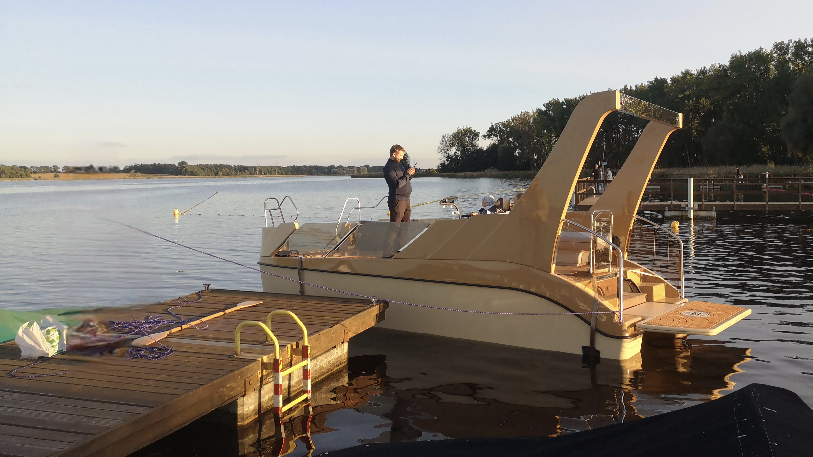
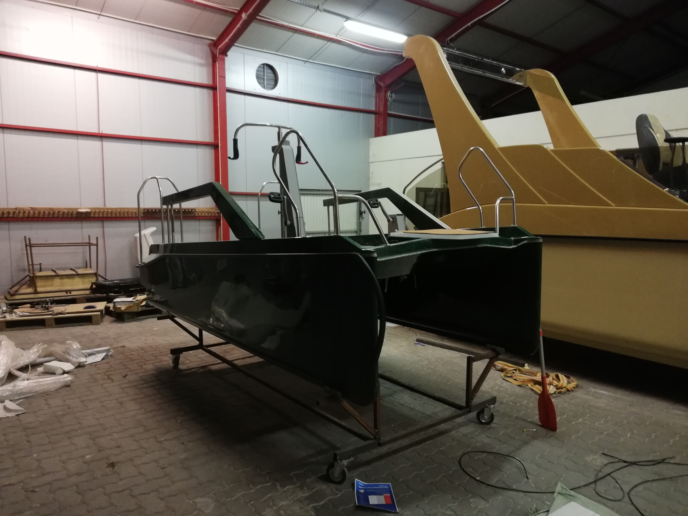
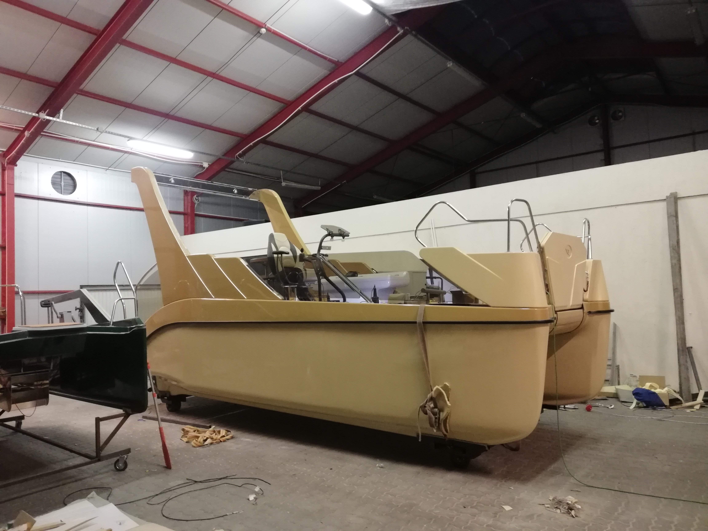

Project Context & The Challenge
The client aimed to create a self-service, automated boat rental system—similar to a car-sharing model—designed for lakes in Poland and Switzerland. The project required engineering the complete electronic architecture from scratch for two distinct vessels: a rugged 5-meter single-engine utility boat, and a luxurious 7-meter recreational catamaran.
I was brought in to take ownership of the hardware integration, motor control, and user interfaces (HMI). The biggest challenge was designing a highly reliable, End-to-End (E2E) billing solution that could operate flawlessly on open water, where GSM or WiFi connectivity is notoriously unreliable.
System Architecture & Edge-Billing
Instead of relying on a central server that could act as a single point of failure on the lake, I designed a resilient edge-computing architecture. The user's RFID card acts as both the physical key and the local database.
Offline Billing Logic
An authorized RFID card must remain in the slot to unlock the motor relays. The microcontroller calculates elapsed usage time (down to the minute) and continuously writes this data directly to the RFID card's memory. Reception software simply reads the card to calculate the fee. No internet required.
Telemetry & Safety
Custom logic monitors the 48V battery pack, preventing deep discharge by translating voltage into a user-friendly "remaining sailing hours" metric. Digital DS18B20 sensors provide precise (0.1°C) ambient and water temperature readings.
System Demo: RFID Payment Logic
Custom desktop app reading billing data directly from the RFID card.
Fleet Technical Specifications
Both systems share the same core billing logic but differ drastically in motor control and user interface approaches.
Utility Boat (5m)
Propulsion: Single 1000W BLDC motor with classic tiller handle and Hall sensor throttle.
Interface: Industrial 320x240 LCD screen displaying RTC time, elapsed trip time, and telemetry.
Safety: Relay-based engine immobilizer tied directly to the RFID presence.
Catamaran (7m+)
Propulsion: Twin 1000W BLDC motors.
Control: Custom 3-axis joystick enabling "tank-style" differential steering (zero-radius turns).
Interface: Advanced 7-inch Nextion Touchscreen displaying telemetry and controlling deck LED lighting.
Production & Assembly Insight


Behind the Scenes: Hardware & HMI
Below is the completed controller unit for the small boat and the designed HMI layout for the larger catamaran's Nextion display.


Controller Bench Testing
Validating logic, relay latching, and LCD updates on the test bench.
Catamaran Propulsion & Sea Trials
The 7-meter catamaran required a more complex control strategy. I implemented a "Tank Steering" algorithm that translates joystick X/Y coordinates into differential PWM signals for the twin motors, enabling zero-radius turns.
Catamaran: Steering Logic & Field Tests
Bench testing the differential steering algorithm followed by real-world sea trials.
Project Status
The technical delivery is fully complete. Both control systems were fully engineered, programmed, and successfully tested on the water. Currently, the commercial deployment is paused due to external business factors on the client's side and complex maritime certification processes in Switzerland. This project stands as a prime example of delivering robust, production-ready engineering despite shifting business landscapes.